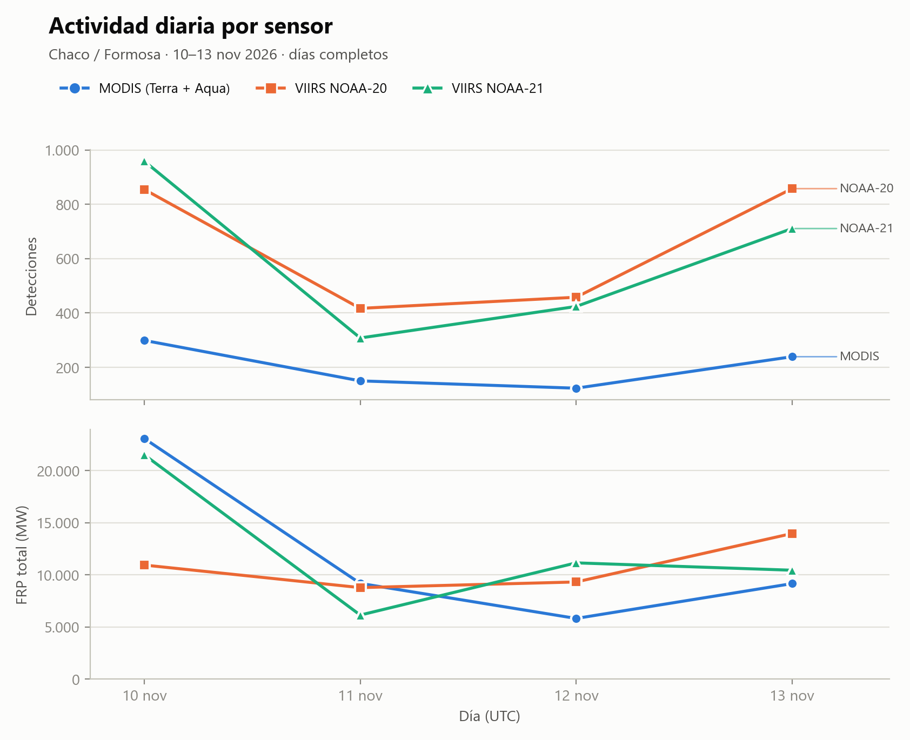
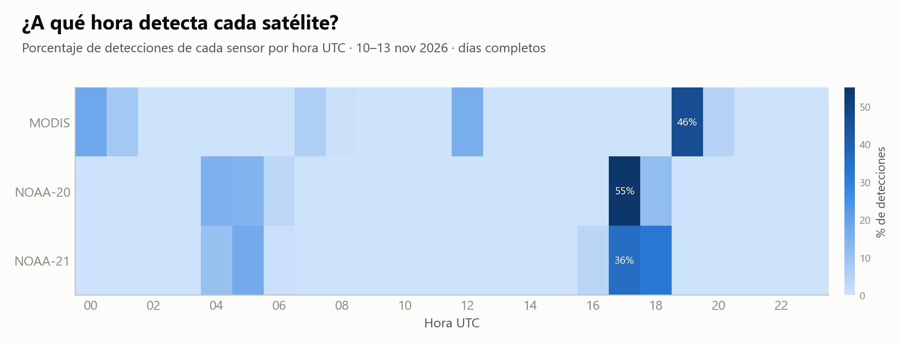
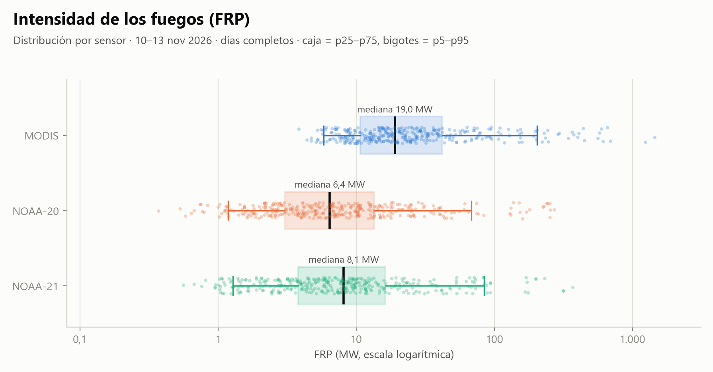
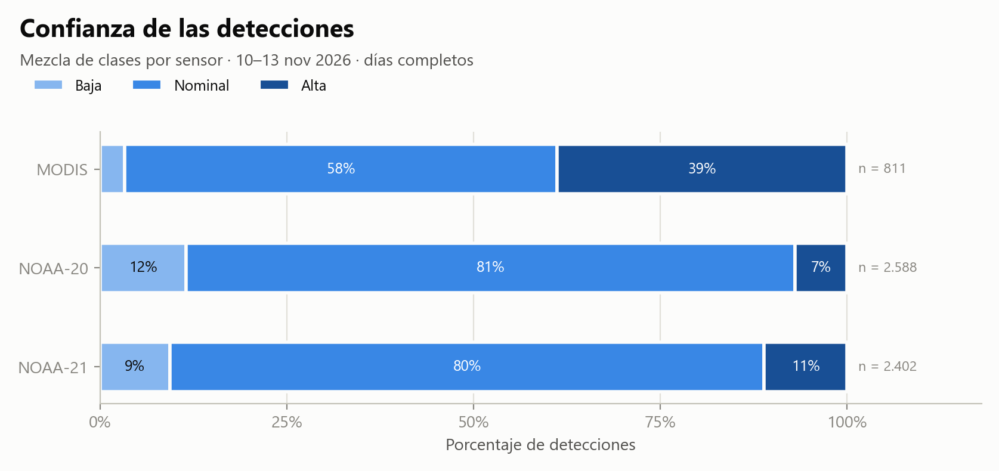
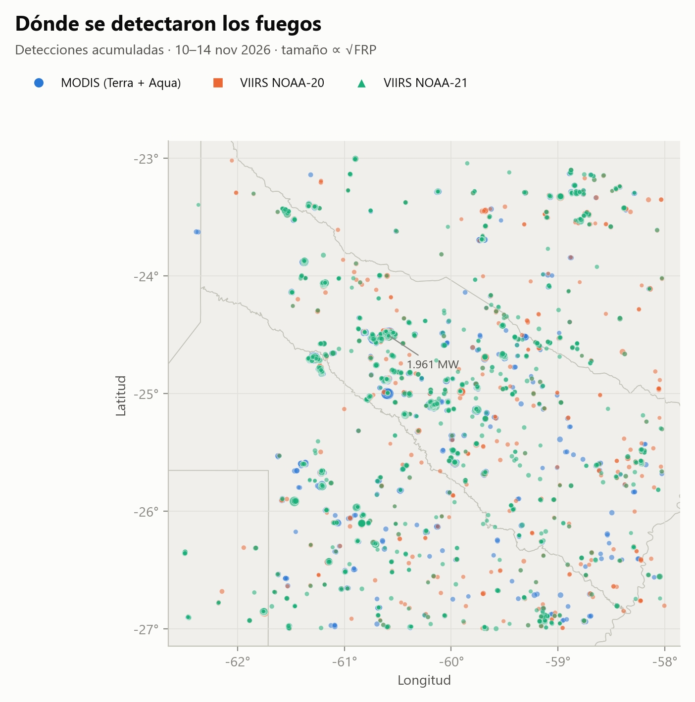
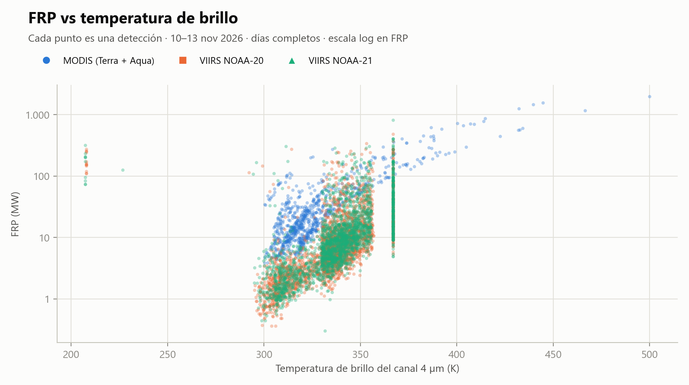

← Volver al mapa de predicciones
Fuegos en Chaco / Formosa
Detecciones de la API Area de NASA FIRMS · 10–14 nov 2026 · área consultada: oeste −62,5 · sur −27,0 · este −58,0 · norte −23,0
Resumen por sensor
Los conteos son píxeles detectados, no número de incendios. La FRP total suma la energía radiativa de todas las detecciones y depende del tiempo de sobrevuelo. Esta tabla incluye todas las detecciones descargadas; los gráficos temporales y de distribución usan solo días completos.
| Fuente | Detecciones | Participación | Mediana FRP (MW) | P90 FRP (MW) | FRP máx. (MW) | FRP total (MW) | Confianza alta | Día | Noche |
|---|---|---|---|---|---|---|---|---|---|
| MODIS (Terra + Aqua) | 890 | 14.6% | 18,5 | 99,8 | 1.960,7 | 48.827 | 41% | 61% | 39% |
| VIIRS NOAA-20 | 2.634 | 43.2% | 6,2 | 34,9 | 478,7 | 43.142 | 7% | 65% | 35% |
| VIIRS NOAA-21 | 2.568 | 42.2% | 7,5 | 45,7 | 809,1 | 49.679 | 10% | 67% | 33% |
Detalle diario
Detecciones y FRP por día y sensor. El 14 de noviembre está incompleto porque la descarga se hizo durante esa jornada.
| Día | Fuente | Detecciones | FRP total (MW) | FRP mediana (MW) | FRP máx. (MW) |
|---|---|---|---|---|---|
| 10 nov | MODIS (Terra + Aqua) | 299 | 23.067,0 | 22,7 | 1.547,8 |
| 10 nov | VIIRS NOAA-20 | 855 | 10.939,5 | 5,9 | 238,6 |
| 10 nov | VIIRS NOAA-21 | 959 | 21.502,4 | 9,8 | 369,6 |
| 11 nov | MODIS (Terra + Aqua) | 150 | 9.182,6 | 14,9 | 1.960,7 |
| 11 nov | VIIRS NOAA-20 | 417 | 8.777,9 | 5,6 | 478,7 |
| 11 nov | VIIRS NOAA-21 | 308 | 6.147,6 | 10,3 | 269,7 |
| 12 nov | MODIS (Terra + Aqua) | 123 | 5.823,1 | 16,8 | 612,7 |
| 12 nov | VIIRS NOAA-20 | 458 | 9.319,4 | 5,3 | 271,9 |
| 12 nov | VIIRS NOAA-21 | 424 | 11.149,6 | 6,6 | 809,1 |
| 13 nov | MODIS (Terra + Aqua) | 239 | 9.162,1 | 19,8 | 595,7 |
| 13 nov | VIIRS NOAA-20 | 858 | 13.960,7 | 7,9 | 252,4 |
| 13 nov | VIIRS NOAA-21 | 711 | 10.443,9 | 5,9 | 403,3 |
| 14 nov | MODIS (Terra + Aqua) | 79 | 1.592,0 | 13,3 | 93,2 |
| 14 nov | VIIRS NOAA-20 | 46 | 144,6 | 2,9 | 9,2 |
| 14 nov | VIIRS NOAA-21 | 166 | 435,7 | 2,1 | 10,2 |
Actividad diaria
Detecciones y energía total por día. El último día descargado se excluye por estar incompleto.

Horario de los sobrevuelos
Cada fila muestra en qué horas UTC detectó fuegos cada sensor. Los máximos corresponden a los sobrevuelos.

Intensidad de los fuegos
Distribución de FRP por sensor en escala logarítmica. La caja es el rango intercuartílico y la línea central, la mediana.

Confianza
Mezcla de clases de confianza. En MODIS las clases se derivan del porcentaje 0–100; en VIIRS son categorías nativas.

Mapa de detecciones
Puntos coloreados por sensor y escalados por la raíz cuadrada de FRP. El máximo se anota en el mapa.

FRP y temperatura de brillo
Relación entre la temperatura del canal de 4 µm y la energía radiativa del fuego. Cada punto es una detección. La banda vertical cerca de 365 K corresponde a píxeles saturados de VIIRS.

Datos y método
Endpoint usado: /api/area/csv/[MAP_KEY]/[SOURCE]/[AREA_COORDINATES]/[DAY_RANGE].
Fuentes: MODIS NRT (Terra/Aqua), VIIRS Suomi NPP, VIIRS NOAA-20 y VIIRS NOAA-21.
Ventana: últimos 5 días. Suomi NPP devolvió 0 detecciones en esta consulta, por eso no
aparece en los gráficos. Los límites administrativos provienen de GADM 4.1.
Limitaciones: una detección es un píxel caliente, no un perímetro ni un área quemada; los satélites pasan pocas veces por día; nubes y humo generan falsos negativos; industrias y reflejos generan falsos positivos; la confianza de MODIS es numérica y la de VIIRS categórica.